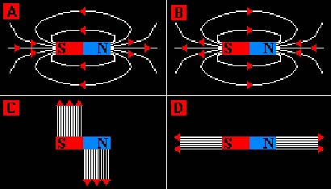
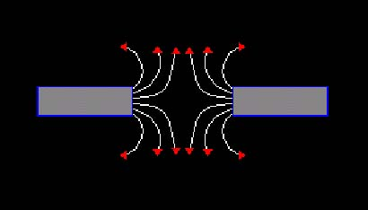
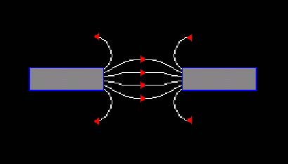
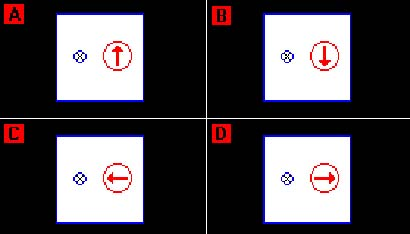
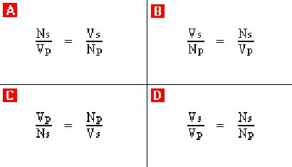
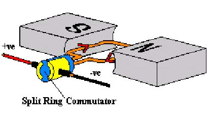

Magnetic fields
1.) The definition of a magnetic field is: "A magnetic field is a region where magnetic materials and also wires carrying currents, experience a force acting on them". Which of the following materials are magnetic?

2.) Study the diagrams carefully. Which one correctly shows the magnetic field lines of a bar magnet?
3.) A solenoid is a coil of current carrying wire with its length larger in comparison with its diameter. When a current passes in a solenoid, what can be said about the magnetic field pattern around and inside it?

4.) Study the diagram carefully. Which of the following have to be brought together to produce the magnetic field pattern shown?

5.) Study the diagram carefully. Which of the following have to be brought together to produce the magnetic field pattern shown?
6.) The Earth has its own magnetic field. If a compass needle points towards the Northern Hemisphere, what pole is it pointing to?

7.) Study the diagrams carefully. They show a compass resting on a piece of card. Passing through a hole in the card is a wire, which has a large current flowing through it. From the direction in which you are looking, which way will the compass needle point if the current flows into the screen?
8.) An unmagnetised bar of steel is tested at both ends by the north pole of a permanent magnet. Which of the following is observed?
9.) A piece of metal is labelled XY. When the north pole of a magnet is held near to end X, the metal is attracted. The same happens when the north pole is held near to Y. What is the piece of metal XY most likely to be?
Electromagnets
10.) The strength of an electromagnet depends on three factors. Which of the following is least likely to effect the strength of an electromagnet?
11.) A coil of wire is wound around a metal core to form an electromagnet. Which of these arrangements of electromagnets will lift the greatest mass of iron when a current of 2 amps flows through it?
12.) Two electromagnets are labelled "A" and "B". When looking at electromagnet "A" end on, the current flows clockwise. When looking at electromagnet "B" end on, the current flows anticlockwise. Which poles are being observed on each electromagnet respectively?
13.) Which of the following statements is NOT true about magnetic materials?
14.) To magnetise a piece of steel you put it into a solenoid with a steady DC supply, turn off the current and take it out. How do you demagnetise a piece of steel?
Electromagnetic Devices
15.) Electromagnetic devices have a magnetically soft core. Why is this?
16.) If used drinks containers are to be recycled, they need to be sorted. One way of doing this is to separate those that are magnetic from those that are not. From a selection of steel, tin and aluminium cans, which ones will stick to a magnet?
17.) Which of the following devices does NOT have an electromagnet in it?
18.) What does a circuit breaker do when the current flowing in its circuit, becomes too high?
19.) What is a relay used for?
20.) In an electric bell, how does the electromagnet continuously turn on and off, to make the bell ring?
The Motor Effect
21.) A wire carrying an electrical current is placed between two bar magnets. In this situation the wire experiences a force. How might the size of this force be increased?
22.) A current in a magnetic field experiences a force. Which of the following statements is NOT true?
23.) When using Fleming's Left Hand Rule, the Thumb shows the direction of what?
24.) Increasing the current to an electric motor will speed its rotation up. Which of the following will NOT speed it up?
25.) What is used to swap the contacts on an electric motor every half turn to keep it rotating in the same direction?
26.) Loudspeakers demonstrate the Motor effect. Which of the following statements is NOT true?
Electromagnetic Induction
27.) The movement of a wire in and out of a magnetic field will produce a current in the wire. This effect is called electromagnetic induction. Which of the following will also cause electromagnetic induction?
28.) A circuit consists of a galvanometer connected to a conductor. The galvanometer is an instrument that can measure electric current. What will be observed about the needle of the galvanometer when the conductor is moved into a magnetic field in one direction and then left there?
29.) There are three factors which will increase the size of an induced current. Which one of these is NOT one of them?
30.) Which of the following statements is NOT true about generators?
31.) Which of the following statements is NOT true about dynamos?
Transformers
32.) What does a Step-down transformer do?
33.) Transformers have a laminated iron core with layers of insulation. This is done to reduce magnetic eddy currents which heat the iron core, wasting energy. Which of the following statements is NOT true about transformers?

34.) Study the formulae carefully. Which one is the correct formula for a transformer?
35.) Study the formulae carefully. Which one is correct, showing that transformers can be imagined as being 100% efficient?
36.) A transformer has 1000 turns on the primary coil and 500 turns on the secondary coil. The output voltage is 12V, what must the input voltage be?
37.) A transformer works from a 240V main's supply. If there are 200 turns on the primary coil and the output voltage is 24V, how many turns must there be on the secondary?
38.) A transformer is used to produce a voltage of 6V for an 18W bulb. If the output arm of the transformer has 30 turns, which of the inputs listed below would allow the lamp to glow at normal brightness?
39.) A transformer has an input voltage of 12V and an input current of 1.5A. Its output voltage is 24V. What is its output current?
40.) A transformer has an input current of 22A. Its output voltage is 110V and its output current is 1.5A. What is its input voltage?
41.) A transformer works from a 25,000V supply. If there are 10,000 turns on the secondary coil and the output voltage is 400,000V, how many turns must there be on the primary?
42.) Imagine a magnetic field that crosses the screen from right to left and a wire in this field, which has a current that flows from the bottom to the top of the screen. Use Fleming's Left Hand Rule to predict the direction of the force on the wire. What direction is this force?
43.) A transformer has an input voltage of 240V and an input current of 2A. Its output current is 10mA (0.01A). What is its output voltage?
44.) A transformer has 600 turns on the primary coil and 200 turns on the secondary coil. The input voltage is 720V, what must the output voltage be?
45.) A transformer has an input voltage of 3V. Its output voltage is 240V and its output current is 0.25mA. What is its input current?
Mixed Bag
46.) A circuit consists of a galvanometer connected to a coil. The galvanometer is an instrument that can measure electric current. What will be observed about the needle of the galvanometer when a magnet is moved in and out of the coil?
47.) A transformer is used to produce a voltage of 240V for a 180W bulb. If the input arm of the transformer has 30 turns, which of the combinations listed below would allow the lamp to glow at normal brightness?

48.) Study the diagram carefully. From the "Split Ring Commutator" end of the motor, which way does the coil move?
49.) When using Fleming's Left Hand Rule, the Second Finger shows the direction of what?
50.) When using Fleming's Left Hand Rule, the First Finger shows the direction of what?
Right:
0
Wrong:
0
Attempts:
0